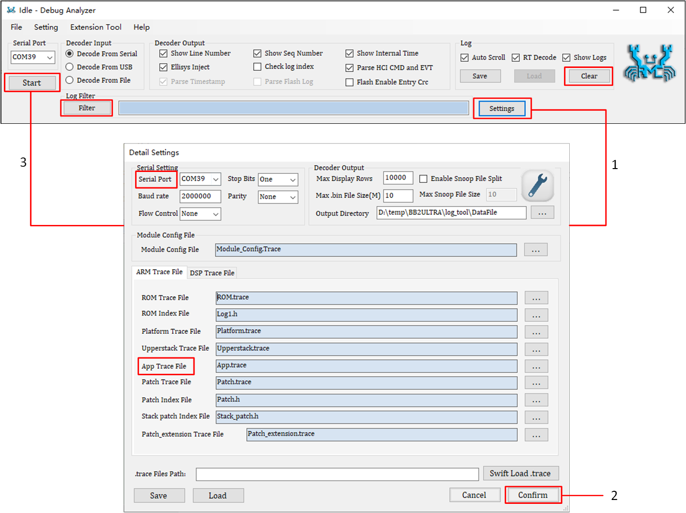
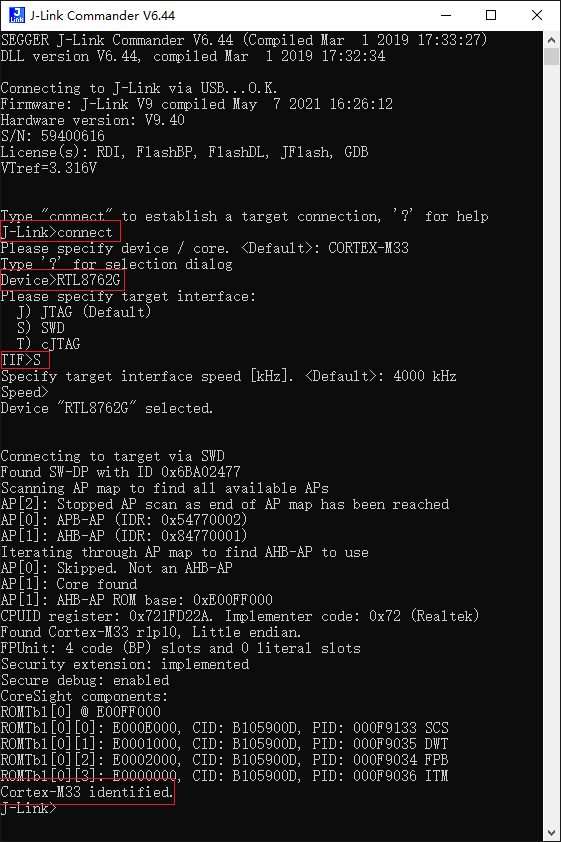
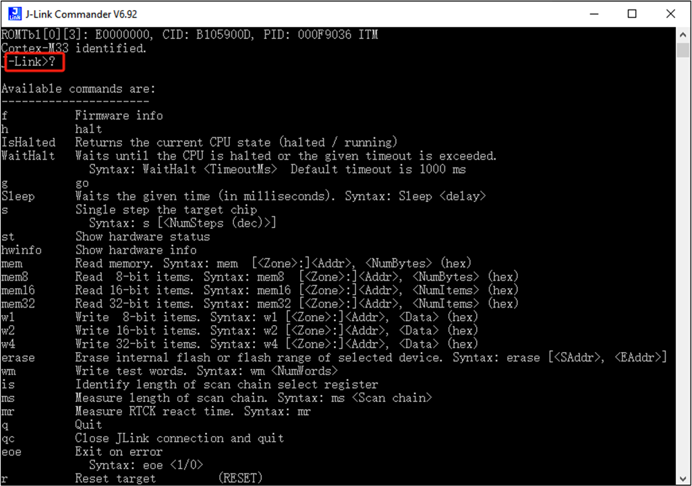

调试系统
调试系统（Debug System）是软件开发过程中的一项关键技术，是用于检测和修复软件程序中的错误或问题的工具和技术的集合。其主要目的是帮助开发人员识别和解决程序在开发和运行过程中遇到的各种问题，从而提高软件质量和可靠性。在调试系统中，开发人员可以通过设置断点、单步执行、日记记录等方式，来检查运行代码时的寄存器值，了解运行时代码状态。
以下是 RTL87x2G 提供的两种调试方式：
使用 log 机制跟踪代码的执行和数据。
使用 ARM Keil MDK 或 J-Link Commander 和 SWD 进行调试，增加/删除断点以及访问/追踪 Memory 等。
Log 机制
Log 机制是软件开发中的一个重要工具，通过记录程序运行期间的各种事件和状态信息，帮助开发人员监控、调试和维护软件系统。RTL87x2G 的 Log 通过 Realtek 提供的 Debug Analyzer 工具查看，该工具旨在简化用户的调试过程。其目标是优化软件问题的识别和解决，促进更高效的开发周期。详情请参考 Debug Analyzer Tool。
RTL87x2G 预留了 P0_3 默认作为 Log UART 的输出引脚，也可以将 log 功能重新配置到其它引脚。Log UART 的输出引脚经 UART-to-USB 连接到 PC，在 PC 端 COM 口通过 Debug Analyzer 接收 log 数据。下面详细介绍 Debug Analyzer 的使用方式。
Debug Analyzer
打开
DebugAnalyzer.exe，主界面点击 Settings 即可。在【Detail Settings】界面中：
在 Serial Port 选择 LOG UART 对应的 COM 口。
在 App Trace File 选择对应的
App.trace以及其它需要的 trace。点击右下角的 confirm。（
App.trace在 APP 程序编译后和App.bin生成在同一个目录位置）
主界面点击 Start 即可。

Debug Analyzer 页面
Debug Analyzer 还提供了一些高级功能。
Log Filter：过滤显示，弹出新窗口，只显示满足过滤条件的 log。
Clear：清空显示框中的 log。
备注
Debug Analyzer 会自动保存 log 文件，并按照端口号和生成时间命名，如 COM5_2015-06-12_18-05-00.log，保存位置在 DebugAnalyzer 安装路径 DebugAnalyzer\DataFile 中。
Log 打印接口
Log 打印接口可以分为以下四种：
基本打印接口
用于打印实时 log，声明如下。
DBG_BUFFER(T_LOG_TYPE type, T_LOG_SUBTYPE sub_type,..T_MODULE_ID module, uint8_t level, char* fmt, uint8_t param_num,...).
参数说明：
- type:
固定是 TYPE_RTL87X2G
- sub_type:
固定是 SUBTYPE_FORMAT
- module:
T_MODULE_ID 类型中有预定义好几种 module，这些 module 用于将 log 分类别，Debug Analyzer 能够识别这些 module，在每条打印的 log 前自动加到 module 名称
- level:
日志级别，表示 log 要打印的级别，定义了以下 4 种类别：
日志级别 |
使用场景 |
|---|---|
LEVEL_ERROR |
致命错误，程序无法继续运行（Log 标识：!!!） |
LEVEL_WARN |
异常情况发生，程序可以继续运行（Log 标识：!!*） |
LEVEL_INFO |
重要信息（Log 标识：!**） |
LEVEL_TRACE |
详细调试信息（Log 标识：无） |
备注
DBG_BUFFER 接口最多允许 20 个参数。
封装打印接口
针对不同的模块，RTL87x2G 封装了相应接口来打印对应的日志，并和基本接口一样，提供了四个日志级别。打印的日志开头会有模块名，例如 [APP] [Flash] 等，声明如下。
{MODULE}_PRINT_{LEVEL}_{PARAMNUM}(...)
参数说明：
- MODULE:
在
trace.h中定义，包括 APP/GAP/USB/FLASH...- LEVEL:
和基本打印接口的四种 level 相同，ERROR/WARN/INFO/TRACE
- PARAMNUM:
0 到 8，代表 log 打印参数的个数
备注
不要超过 8 个参数（如果使用
DBG_BUFFER接口，最多允许 20 个参数）。尽量把所有参数放到一条打印语句中。
辅助打印接口
DBG_BUFFER 接口只能打印诸如（d，i，u，o，x）的整型、字符（c）和指针类型（p），当要打印 string，binary array 或者 BT 地址时，需用到以下辅助打印接口。
接口 |
说明 |
注意事项 |
|---|---|---|
TRACE_STRING(char* data) |
直接打印字符串，转换符 %s |
字符串的长度最大为 240 字节 |
TRACE_BINARY(uint16_t length, uint8_t* data) |
以 16 进制格式打印二进制数据，转换符 %b |
二进制数据最大为 240 字节 |
TRACE_BDADDR(char* bd_addr) |
以 BT 地址格式打印二进制字符串，转换字符 %s |
单条 log 最多可打印 4 个 BT 地址，例如： Hex Array: 0xaa 0xbb 0xcc 0xdd 0xee 0xff –> Literal String: FF::EE::DD::CC::BB::AA |
直接打印接口
通过调用基于 DBG_BUFFER 接口的函数打印 log 对系统性能的影响比较小，但是打印实时性不高，因为通过这些 API 打印的 log 会被缓存到 buffer 中，在系统空闲的时候发送给 Log UART。
DBG_DIRECT 用来打印实时 log。这个 API 打印 log 对系统的影响比较大，因为会直接发送数据给 Log UART，在 log 打印完之前系统不能继续执行，所以 强烈建议只在以下一些特定的情况下使用该 API。
在系统重启前
实时性要求高的场景
打印接口示例
下面的例子展示了 log APIs 的一般用法，以及在 Debug Analyzer 上对应的输出。
uint32_t n = 77777;
uint8_t m = 0x5A;
uint8_t bd1[6] = {0x00, 0x11, 0x22, 0x33, 0x44, 0x55};
uint8_t bd2[6] = {0xAA, 0xBB, 0xCC, 0xDD, 0xEE, 0xFF};
char* c1[10] = {'1', '2', '3', '4', '5', '6', '7', '8', '9', '0'};
char* c2[8] = {'a', 'b', 'C', 'd', 'E', 'F', 'g', 'H'};
char* s1 = "Hello world!";
char* s2 = "Log Test";
ADC_PRINT_TRACE1("ADC value is %d", n);
UART_PRINT_INFO3("Serial data: 0x%x, c1[%b], s1[%s]",..m, TRACE_BINARY(10, c1), TRACE_STRING(s1));
GAP_PRINT_WARN6("n[%d], m[%c] bd1[%s], bd2[%s], c2[%b], s2[%s]", n, m,..TRACE_BDADDR(bd1), TRACE_BDADDR(bd2),TRACE_BINARY(8, c2), TRACE_STRING(s2));
APP_PRINT_ERROR0("APP ERROR OCCURRED...");
Debug Analyzer 上对应的输出结果。
00252 10-25#17:12:02.021 132 10241 [ADC] ADC value is 77777
00253 10-25#17:12:02.021 133 10241 [UART] !**Serial data:..0x5a, c1[31-32-33-34-35-36-37-38-39-30], s1[Hello world!]
00254 10-25#17:12:02.022 134 10241 [GAP] !!*n[77777], m[Z] bd1[55::44::33::22::11::00],bd2[FF::EE::DD::CC::BB::AA],c2[61-62-43-64-45-46-67-48], s2[Log Test]
00255 10-25#17:12:02.022 135 10241 [APP] !!!APP ERROR OCCURRED...
Log 控制
用户可以通过以下两种方式选择打印各个日志级别：
MP Tool Config 控制
MP Tool 作为量产工具，同时支持调试/量产两种模式，可以在调试过程中配置各个模块对应的各个日志级别是否使能，使用方式如下，详情请参考： MP Tool。


{kind=link}
Log 控制接口
有时候需要控制某些 log 的打开和关闭。一种方式是通过设定 MP Tool 中的 Config File，将 Config File 烧录到 RTL87x2G。如果需要频繁改变 log 打印 level，这种方式就不够灵活了，因为每次重烧 System Config File 也不方便，所以 SDK 中提供了 3 个 API 来控制特定 module 的特定 level，分别为：
这里通过一些场景来帮助用户理解如何在应用程序中使用 log 控制的 APIs。假设 log 打印功能已经打开，并且 Config File 中将所有 log trace mask 置成 1，意味着所有 module 的所有 level 的 log 都会打印出来。
场景 1
关闭 APP module 的所有 trace 和 info 级别的 log。
int main(void) { log_module_trace_set_update (MODULE_APP, LEVEL_INFO, false); log_module_trace_set_update(MODULE_APP, LEVEL_TRACE, false); ... }
场景 2
只打开 PROFILE module 的 log。
int main(void) { uint64_t mask[LEVEL_NUM]; memset(mask, 0, sizeof(mask)); log_module_trace_init(mask); log_module_trace_set_update(MODULE_PROFILE, LEVEL_ERROR, true); log_module_trace_set_update(MODULE_PROFILE, LEVEL_WARN, true); log_module_trace_set_update(MODULE_PROFILE, LEVEL_INFO, true); log_module_trace_set_update(MODULE_PROFILE, LEVEL_TRACE, true); ... }
场景 3
关闭 PROFILE/PROTOCOL/GAP/APP module 的 trace 级别 log。
int main(void) { log_module_bitmap_trace_set(MODULE_BIT_PROFILE | MODULE_BIT_PROTOCOL | MODULE_BIT_GAP | MODULE_BIT_APP, LEVEL_TRACE, false); ... }
场景 4
关闭除了 APP module 以外的所有 trace 和 info 级别的 log，包括关闭 BT Snoop log。
int main(void) { for (uint8_t i = 0; i < MODULE_NUM; i++) { log_module_trace_set_update((T_MODULE_ID)i, LEVEL_TRACE, false); log_module_trace_set_update((T_MODULE_ID)i, LEVEL_INFO, false); } log_module_trace_set_update(MODULE_APP, LEVEL_INFO, true); log_module_trace_set_update(MODULE_APP, LEVEL_TRACE, true); log_module_trace_set_update(MODULE_SNOOP, LEVEL_ERROR, false); ... }
SWD 调试
RTL87x2G 实现了 3 个基本的调试接口：
run control
breakpoint
memory access
备注
RTL87x2G 支持 SWD，不支持 JTAG。
ARM Keil MDK SWD 调试
首先正确安装和配置 ARM Keil MDK 和 SWD RTL87x2G 支持的主要调试特性如 UI 上展示。
Running control ：Running/Reset/Step
Breakpoints ：Add/Delete/Conditional
调试功能窗口
Core registers：监视/修改 MCU 寄存器值
Disassembly：显示程序执行的汇编代码，或者与源代码混合显示
Source code：查看 C 代码，支持断点以及变量的实时显示
Variable watch：查看加入监视的变量值
Memory：显示/修改待查的内存，支持直接的地址输入和可变的地址输入
Call stack and local variable：显示当前的调用栈，以及 local 变量（即 stack 上的变量）
备注
有时候可能会遇到 image 无法成功下载到 flash 上，或者即使与 J-Link 成功连接，但依旧找不到 SWD，这时可做如下检查：
更改 debug clock 到一个较小的值（例如从 2MHz 降到 1MHz），或者换用更短的 SWD 调试线。
IC 可能已经进入了 DLPS 模式，reset IC，这样系统会保持处于 active 状态 5 秒钟。
应用程序中是否关闭了 SWD feature。
J-Link Commander SWD 调试
在使用 J-Link Commander 之前，先添加 device 信息，配置 flash 算法。这样可以通过 J-Link Commander 直接烧录 bin、data 到 flash。
在 J-Link 安装目录（
JLink.exe所在目录）创建文件夹：Devices\Realtek\RTL87x2G。从 SDK 中(
sdk\tool\flash目录下)找到RTL87x2G_FLASH.FLM、RTL876x_LOG_TRACE.FLM文件，拷贝到Devices\Realtek\RTL87x2G。打开 J-Link 安装目录下的
JLinkDevices.xml文件，添加如下的 Device 下载算法信息。<Device> <ChipInfo Vendor="Realtek" Name="RTL87x2G" Core="JLINK_CORE_CORTEX_M33" WorkRAMAddr="0x00130000" WorkRAMSize="0x8000"/> <FlashBankInfo Name="QSPI Flash" BaseAddr="0x04000000" MaxSize="0x01000000" Loader="Devices/Realtek/RTL87X2G/RTL87x2G_FLASH.FLM" LoaderType="FLASH_ALGO_TYPE_CMSIS" AlwaysPresent="1" /> <FlashBankInfo Name="QSPI Flash" BaseAddr="0x08000000" MaxSize="0x10400000" Loader="Devices/Realtek/RTL87X2G/RTL876x_LOG_TRACE.FLM" LoaderType="FLASH_ALGO_TYPE_CMSIS" AlwaysPresent="1" /> </Device>
打开 J-Link Commander 命令窗口，依次输入 connect、RTL87x2G 和 s，看到如下命令 Cortex-M33 identified. 即说明连接成功。

J-Link Commander SWD 调试
成功连接上 SWD 之后，进而可以通过 J-Link Commander 中支持的命令调试，常用指令如下：
常用指令说明 指令
说明
h
halt cpu
r
reset cpu
g
go
s
单步运行
setbp
设置断点
mem32
读取指定地址的数据
w4
向指定地址写入数据
erase
擦除 flash
loadbin
烧录 bin 文件到 flash
savebin
将 flash 上的数据保存成 bin 文件
?
直接输入 “?” 可以获取全部支持的命令

J-Link Commander SWD 调试命令查询
{kind=link}
{kind=link}
See Also
相关 API Reference 请查看：